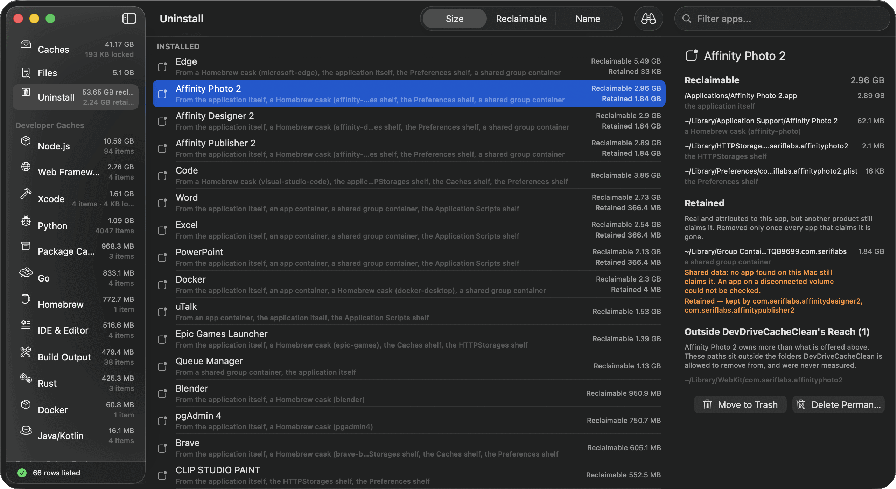
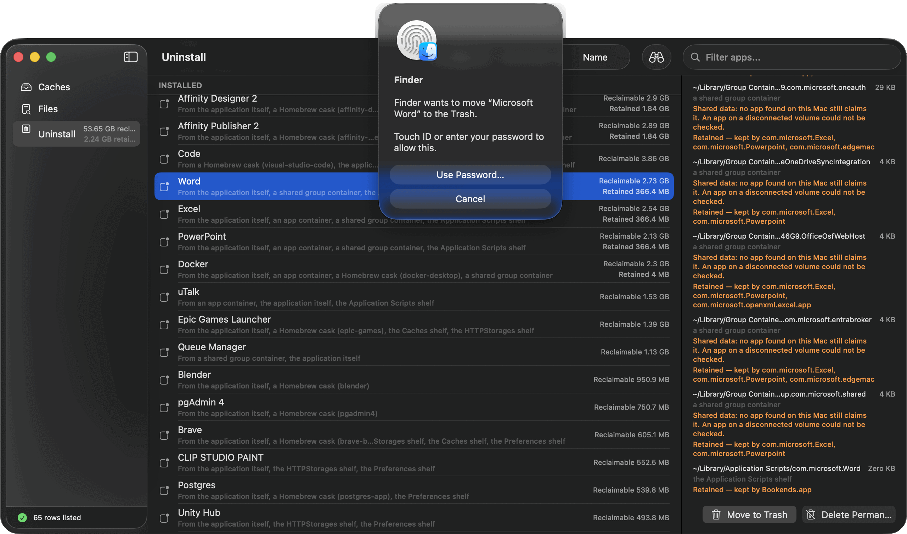
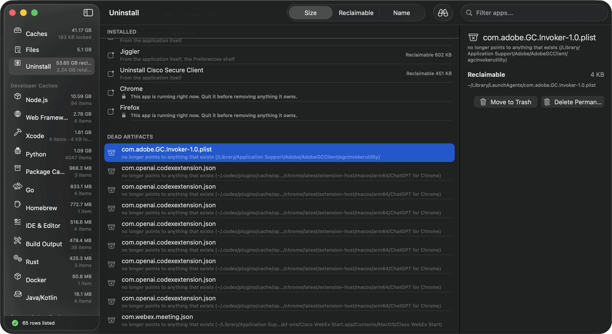

Dragging an app to the Trash removes the app.
The app bundle is only one part of an app's footprint. Containers, preferences, caches, login items, and launch agents can remain after the bundle is gone. DDCC finds those paths, shows the evidence tying them to the app, and removes the selected footprint together.
- 67 apps listed
- 2.24 GB retained, not offered
- 10 dead artifacts found

The hard part isn't finding files. It's knowing whose they are.
A folder name can look related to an app without belonging to it. DDCC attributes a path when something on your Mac declares the relationship, and it says which declaration on every row.
| What it reads | Who wrote it | What it proves |
|---|---|---|
| Sandbox container | macOS | The directory this bundle identifier owns |
| Group entitlement | The app, signed | A container it shares with named siblings |
| Homebrew zap stanza | The cask author | Paths the packager says to remove |
| Installer receipt | The installer | Files actually written at install time |
| Native messaging manifest | The browser | The executable a browser extension launches |
| A folder with a similar name | Nobody | Not used |
The row needs evidence before DDCC treats it as part of an app footprint.
Shared data changes the reclaimable total.
Affinity Photo, Designer and Publisher share 1.84 GB. Counting it toward each app would overstate the total; removing it with the first app could affect the other two. DDCC lists shared bytes, attributes them to every claimant, and holds them back until the last claimant is gone.
Reclaimable now. Nothing else on this Mac claims any of it.
Real, and this app's, but Designer and Publisher claim it too. Excluded from the total above.
Owned by the app, outside the folders DDCC may remove from. Never measured, still shown.
Apps installed for everyone need macOS to say yes.
Word, Excel and anything else that arrived as an installer package belongs to the system rather than to your user account. DDCC asks Finder to move it, and macOS asks you to authorize the move.

Trash only, and it says so first
An app removed this way goes to the Trash. The confirmation explains why permanent deletion is unavailable for that move.
One extra prompt, once
The first time, macOS also asks whether DDCC may control Finder. That's the system asking, not the app.
It also finds what's left of apps you already deleted.
A launch agent can name a program that no longer exists. DDCC follows that pointer, shows the missing target, and lists the artifact in its own section.

Removal uses the Trash by default.
Move to Trash is the default
Space is freed when you empty the Trash, and anything DDCC moved can be put back from the Finder like any other file.
Permanent deletion is opt-in
A separate control, a separate confirmation, and the list of exactly what goes — grouped by how much it costs you to be wrong.
Apple's own apps are refused
Anything in Apple's namespace is declined outright, even if you ask for it by name.
Nothing leaves your Mac
No account, no telemetry, no network connection. The only program it launches is Finder, and only to perform a move you asked for.